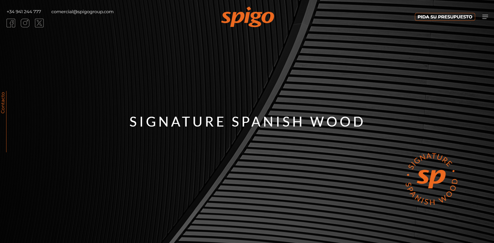
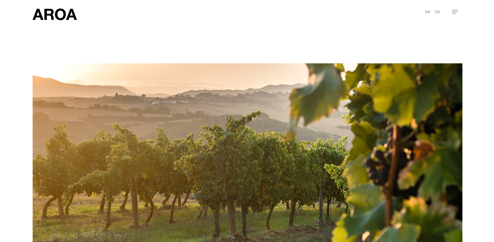

¡Hola! Soy Alex y creo que me gusta esto de la informática. Soy Senior Developer con 5 años de experiencia en los que he hecho páginas web con Astro, Angular, Drupal, PHP, React y WordPress.
Mi trayectoria abarca desde una startup hasta una gran empresa. En Indra, trabajé en el desarrollo backend del proyecto GNSS Galileo de la Comisión Europea. Actualmente he vuelto a Brandcode donde lidero el equipo de desarrollo como Desarrollador Senior. Más allá del código, centro mis esfuerzos en ayudar con el flujo cliente-desarrollador analizando requisitos y proponiendo soluciones escalables que facilitan posibles iteraciones y mejoras futuras, evitando el "development hell".
Ahora mismo fuera del trabajo dedico parte de mi tiempo a estudiar Golang y Angular. Fuera de la programación intento volver a retomar mi pasión por los videojuegos, dibujar pixelart, leer ciencia ficción y hacer deporte.
Creación y mantenimiento de páginas web drupal, donde no solo lidero desarrollo, sino que también gestiono y asesoro al equipo de trabajo y al cliente.
Desarrollo backend para la web del sistema europeo de posicionamiento por satélite GNSS Galileo. Implementando el gestor de contenido y conectividad con los diferentes equipos del proyecto.
Creación y mantenimiento de diversos proyectos en WordPress y Drupal, principalmente. Trabajaba en una amplia gama de proyectos desde paginas de marca, empresas locales hasta proyectos de administraciones publicas, regionales y nacionales.
Servidor JSON RESTful escrito en Go, inspirado en json-server. Ofrece endpoints CRUD plug-and-play sobre cualquier archivo JSON, con filtrado avanzado, paginación segura y respuestas estilo JSON:API
Sitio web del sistema europeo de posicionamiento por satélite GNSS Galileo. El sitio no está publicado todavía.

Página web de SPIGO GROUP en la que mostrar el producto y la marca, creando una experiencia elegante y atractiva para el cliente.

Proyecto en WordPress para crear una web única en la que se muestran los productos y la marca de Aroa Bodegas.